Beaderstadt California Housing Price Prediction¶
Author: Alissa Beaderstadt
Date: October 21, 2025
Objective: Predict the median house price in California using available housing features.
Introduction¶
In this project, I’m diving into the California housing dataset to uncover which factors have the biggest impact on home values. I’ll be building a predictive model and interpreting the results to see what they tell us about housing trends in California.
Imports¶
Import the necessary Python libraries for this notebook.
import pandas as pd
import matplotlib.pyplot as plt
import seaborn as sns
from sklearn.datasets import fetch_california_housing
from sklearn.model_selection import train_test_split
from sklearn.linear_model import LinearRegression
from sklearn.metrics import r2_score, mean_absolute_error
import numpy as np
Section 1. Load and Explore the Data¶
1.1 Load the dataset and display the first 10 rows¶
Load the California housing dataset directly from scikit-learn.
- The fetch_california_housing function returns a dictionary-like object with the data.
# Load the data
data = fetch_california_housing(as_frame=True)
# Convert data into a pandas DataFrame
data_frame = data.frame # type: ignore
# Display just the first 10 rows
data_frame.head(10)
| MedInc | HouseAge | AveRooms | AveBedrms | Population | AveOccup | Latitude | Longitude | MedHouseVal | |
|---|---|---|---|---|---|---|---|---|---|
| 0 | 8.3252 | 41.0 | 6.984127 | 1.023810 | 322.0 | 2.555556 | 37.88 | -122.23 | 4.526 |
| 1 | 8.3014 | 21.0 | 6.238137 | 0.971880 | 2401.0 | 2.109842 | 37.86 | -122.22 | 3.585 |
| 2 | 7.2574 | 52.0 | 8.288136 | 1.073446 | 496.0 | 2.802260 | 37.85 | -122.24 | 3.521 |
| 3 | 5.6431 | 52.0 | 5.817352 | 1.073059 | 558.0 | 2.547945 | 37.85 | -122.25 | 3.413 |
| 4 | 3.8462 | 52.0 | 6.281853 | 1.081081 | 565.0 | 2.181467 | 37.85 | -122.25 | 3.422 |
| 5 | 4.0368 | 52.0 | 4.761658 | 1.103627 | 413.0 | 2.139896 | 37.85 | -122.25 | 2.697 |
| 6 | 3.6591 | 52.0 | 4.931907 | 0.951362 | 1094.0 | 2.128405 | 37.84 | -122.25 | 2.992 |
| 7 | 3.1200 | 52.0 | 4.797527 | 1.061824 | 1157.0 | 1.788253 | 37.84 | -122.25 | 2.414 |
| 8 | 2.0804 | 42.0 | 4.294118 | 1.117647 | 1206.0 | 2.026891 | 37.84 | -122.26 | 2.267 |
| 9 | 3.6912 | 52.0 | 4.970588 | 0.990196 | 1551.0 | 2.172269 | 37.84 | -122.25 | 2.611 |
1.2 Check for missing values and display summary statistics¶
# Check data types and missing values
data_frame.info()
# See summary statistics
data_frame.describe()
# Identify missing values in each column
data_frame.isnull().sum()
<class 'pandas.core.frame.DataFrame'>
RangeIndex: 20640 entries, 0 to 20639
Data columns (total 9 columns):
# Column Non-Null Count Dtype
--- ------ -------------- -----
0 MedInc 20640 non-null float64
1 HouseAge 20640 non-null float64
2 AveRooms 20640 non-null float64
3 AveBedrms 20640 non-null float64
4 Population 20640 non-null float64
5 AveOccup 20640 non-null float64
6 Latitude 20640 non-null float64
7 Longitude 20640 non-null float64
8 MedHouseVal 20640 non-null float64
dtypes: float64(9)
memory usage: 1.4 MB
MedInc 0
HouseAge 0
AveRooms 0
AveBedrms 0
Population 0
AveOccup 0
Latitude 0
Longitude 0
MedHouseVal 0
dtype: int64
Analysis:
-
There are 20,640 data instances and nine features.
-
The features are:
MedInc,HouseAge,AveRooms,AveBedrms,Population,AveOccup,Latitude,Longitude, andMedHouseVal. -
All features are numeric and none are categorical. There are no missing values.
-
Features like MedInc (median income) and AveRooms (average rooms) will likely be strong predictors.
-
The MedInc and MedHouseVal columns are scaled in the dataset:
- MedInc is in tens of thousands of dollars.
- MedHouseVal is in hundreds of thousands of dollars.
Section 2. Visualize Feature Distributions¶
2.1 Create histograms, boxplots, and scatterplots¶
- First, Generate histograms for all numerical columns
# Create histograms for all numeric features with 30 bins
data_frame.hist(bins=30, figsize=(12, 8))
plt.show()
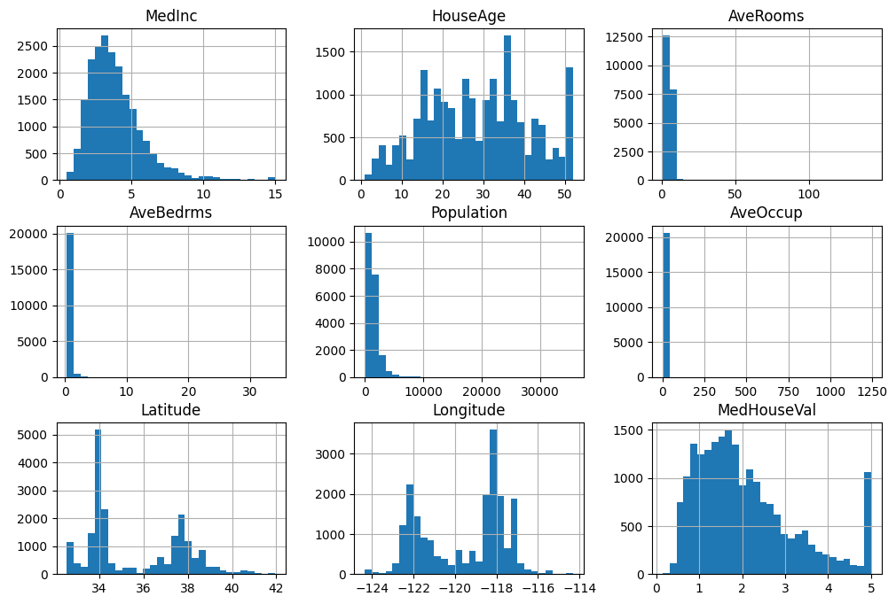
Analysis:
-
MedInc is right skewed: most households earn lower incomes, but there are some high income outliers.
-
HouseAge is fairly uniform but there are spikes around 15, 35, and 50 years: This suggests that a high number of houses were built around these times.
-
MedHouseVal is right skewed: most houses fall between $100k - $200k but there’s a high spike at 5, which shows that house values above $500k are capped in this dataset.
-
Second, generate one Boxenplot for each column (good for large datasets)
# Create a boxenplots using sns.boxenplot().
for column in data_frame.columns:
plt.figure(figsize=(6, 4))
sns.boxenplot(data=data_frame[column])
plt.title(f'Boxenplot for {column}')
plt.show()
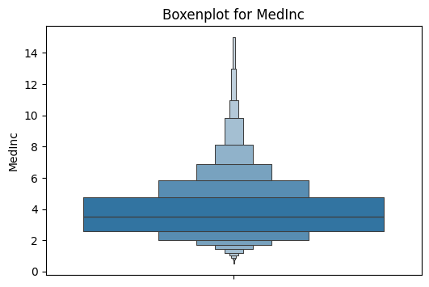
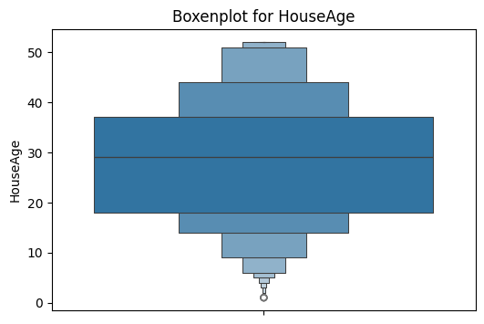
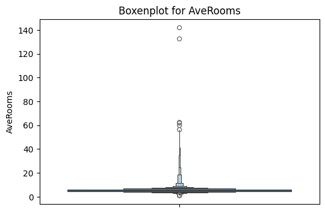
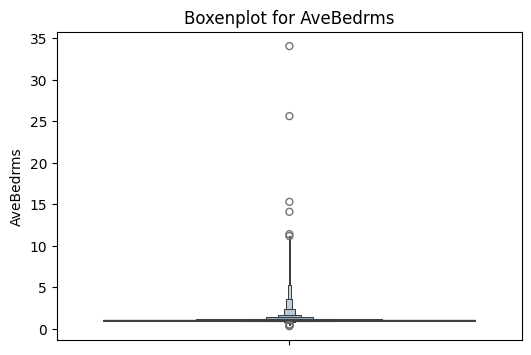
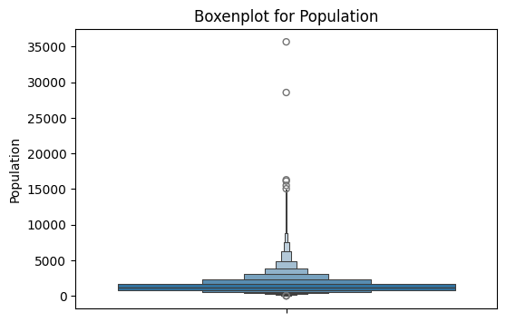
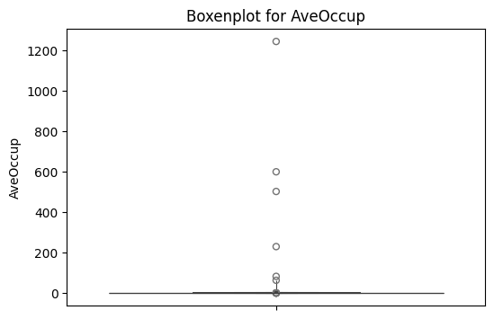
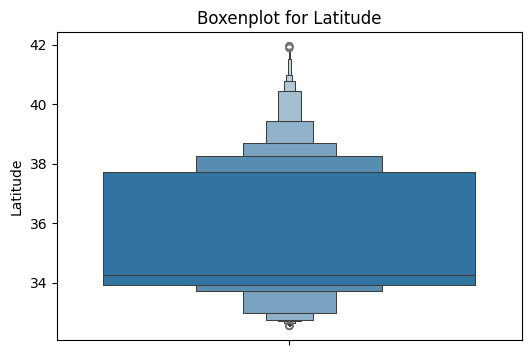
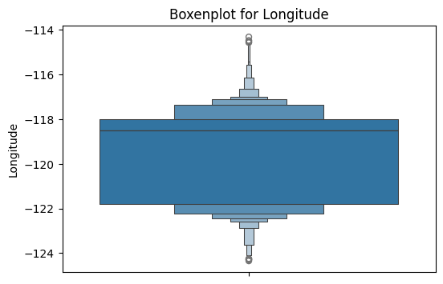
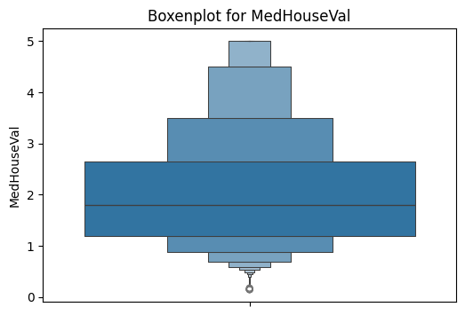
Analysis:
-
Most features have a few outliers, especially AveRooms, AveBedrms, and Population.
-
HouseAge has a fairly uniform distribution, but it’s thickest between 15-35 years. This indicates that a larger number of houses are in this age range.
-
MedInc is thickest between 2-5, showing that most households earn median incomes in this range. It tapers off gradually toward higher values indicating fewer high income households.
-
Third - Generate all Scatter Plots
There is a LOT of data, so this will take a while. (Comment out after analysis to speed up the notebook).
sns.pairplot(data_frame)
plt.show()
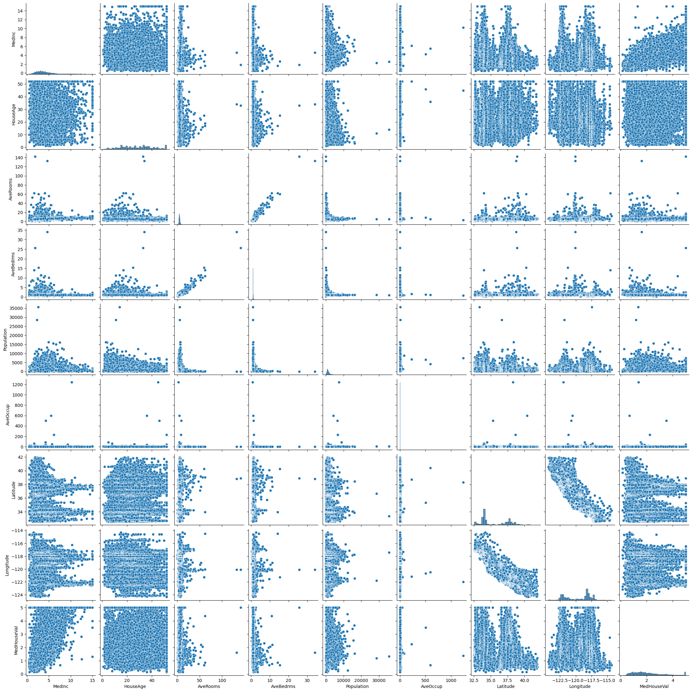
Analysis:
-
MedInc vs MedHouseVal: clear positive correlation - higher income generally predicts higher house values.
-
AveRooms vs MedHouseVal: points are concentrated on the left because the x-axis spans 0-100, but most houses have fewer than 50 rooms. This shows that AveRooms is not scaled relative to other features.
-
HouseAge vs MedHouseVal: shows a weaker relationship, showing house age alone is less predictive.
Section 3. Feature Selection and Justification¶
3.1 Choose two input features for predicting the target¶
- Select
MedIncandAveRoomsas predictors. - Select
MedHouseValas the target variable.
In the following, X is capitalized because it represents a matrix (consistent with mathematical notation). y is lowercase because it represents a vector (consistent with mathematical notation).
# Create a list of contributing features and the target variable
features: list = ['MedInc', 'AveRooms']
# Define the target feature string (the variable we want to predict)
target: str = 'MedHouseVal'
#Define the input DataFrame
df_X = data_frame[features]
# Define the output DataFrame
df_y = data_frame[target]
Section 4. Train a Linear Regression Model¶
4.1 Split the data¶
Split the dataset into training and test sets (80% train / 20% test).
Call train_test_split() by passing in:
- df_X – Feature matrix (input data) as a pandas DataFrame
- y – Target values as a pandas Series
- test_size – Fraction of data to use for testing (e.g., 0.1 = 10%)
- random_state – Seed value for reproducible splits
We'll get back four return values:
- X_train – Training set features (DataFrame)
- X_test – Test set features (DataFrame)
- y_train – Training set target values (Series)
- y_test – Test set target values (Series)
X_train, X_test, y_train, y_test = train_test_split(
df_X, df_y, test_size=0.2, random_state=42
)
4.2 Train the model¶
Create and fit a LinearRegression model.
LinearRegression – A class from sklearn.linear_model that creates a linear regression model.
model – An instance of the LinearRegression model. This object will store the learned coefficients and intercept after training.
fit() – Trains the model by finding the best-fit line for the training data using the Ordinary Least Squares (OLS) method.
X_train – The input features used to train the model.
y_train – The target values used to train the model.
model = LinearRegression()
model.fit(X_train, y_train)
LinearRegression()In a Jupyter environment, please rerun this cell to show the HTML representation or trust the notebook.
On GitHub, the HTML representation is unable to render, please try loading this page with nbviewer.org.
Parameters
| fit_intercept | True | |
| copy_X | True | |
| tol | 1e-06 | |
| n_jobs | None | |
| positive | False |
Make predictions for the test set.
The model.predict() method applies this equation to the X test data to compute predicted values.
y_pred = model.predict(X_test)
y_pred contains all the predicted values for all the rows in X_test based on the linear regression model.
y_pred = model.predict(X_test)
4.3 Report R², MAE, RMSE¶
We evaluate the model using three key metrics:
First R² :
- Coefficient of Determination R² - This tells you how well the model explains the variation in the target variable. A value close to 1 means the model fits the data well; a value close to 0 means the model doesn’t explain the variation well.
r2 = r2_score(y_test, y_pred)
print(f'R²: {r2:.2f}')
R²: 0.46
Second MAE:
- Mean Absolute Error (MAE) - This is the average of the absolute differences between the predicted values and the actual values. A smaller value means the model’s predictions are closer to the actual values.
mae = mean_absolute_error(y_test, y_pred)
print(f'MAE: {mae:.2f}')
MAE: 0.62
Third RMSE:
- Root Mean Squared Error (RMSE) - This is the square root of the average of the squared differences between the predicted values and the actual values. It gives a sense of how far the predictions are from the actual values, with larger errors having more impact.
rmse = np.sqrt(np.mean((y_test - y_pred)**2))
print(f'RMSE: {rmse:.2f}')
RMSE: 0.84
Section 5: Conclusion - Model Evaluation: Actual vs Predicted House Values¶
plt.figure(figsize=(8,6))
plt.scatter(y_test, y_pred, alpha=0.5)
plt.xlabel("Actual Median House Value")
plt.ylabel("Predicted Median House Value")
plt.title("Actual vs Predicted House Values")
plt.plot([0,5], [0,5], 'r--') # reference line y=x
plt.show()
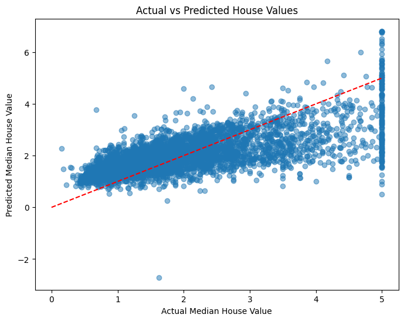
Analysis¶
- The scatter plot shows that our predictions mostly track the actual house values, though there’s a bit of spread at the higher end.
- This matches what the R², MAE, and RMSE numbers tell us: the model does a decent job capturing the trend but isn’t perfect, especially for extreme values.
Model Performance¶
- R² = 0.46: The model explains about 46% of the variation in California house prices. Our two features capture some trends, but much more influences prices.
- MAE = 0.62: On average, predictions are off by about $62,000.
- RMSE = 0.84: Typical prediction error is roughly $84,000, indicating some houses are harder to predict accurately.
Takeaways¶
- Median income is the strongest driver of house prices.
- Average number of rooms contributes, but less dramatically.
- Adding more features like house age, population density, or location could improve the model.
- This simple linear model provides a reasonable baseline, but the relatively low R² suggests that more advanced models could perform better.